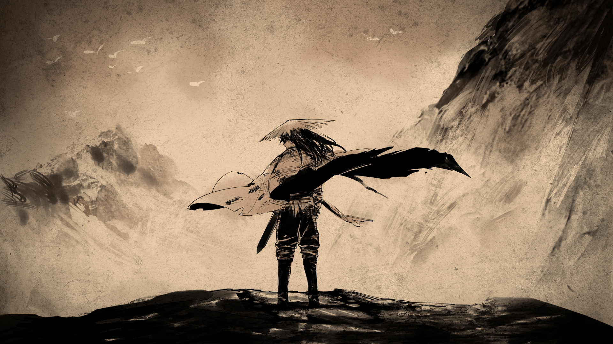

良 第十一章：梦想
返回
满穗配音
良爷睡不着吗
这么早睡今天不打算做点什么吗
良爷今晚想学什么
好那先学制作小人吧良爷想做什么样的小人
我会的戏也不多只会三英战吕布武松打虎哪吒闹海
对啊我又不是要做戏子的用不着这手艺来谋生爹爹便只教了这三个
一会儿镂刻上色完后就像大虫了
完了这张镂废了都怪良爷突然和我说话
这里是红色这里是茶色这里则是黑色
良爷做好了
唔武松不好做
看过的那三场戏走兽我基本都会画但不会画人
也不是啊我还会画赤兔马呢
嗯身形倒能临摹得相似但我不知道武松长什么样该怎么办呀
对了良爷我想到一个主意
我可以照着良爷画武松
不知道但想试试看
我画画一直都没有什么想法若是空想什么也画不出来可若是照着临摹十分能有九分像
还不行染料还得干一干等干透了后还要裁剪一番才能串到竹签上
良爷呢不回去睡吗
那我也先不睡了陪一会儿良爷帮你看看
良爷用这个动刀前要先用细笔画一遍
好那我去睡了良爷也要早睡
良爷良爷我想看看你昨天做的赤免马
嗯大致不错挺有赤兔马的感觉就是小了点
什么呢
哦锣鼓很好奏的爹爹教过我随着演出的节奏把握重要的时机就好
人物登场的时候要奏得稳一些打斗的时候奏得快一些说词的时候奏得缓一些
好
嗯良爷学东西还挺快的有模有样的
那我们再跑远点去试试看
那良爷我倒有一个想法
明天要不要让她们看我们演影子戏呀
对我和良爷好几个晚上都在练练了好久了
良爷那你来操影我来奏锣鼓
我唱不好
白袍乌甲素包巾丈八蛇矛手内握哎
嘿嘿良爷
她们挺喜欢我们演的戏呢不仅看得投入还同我们一起演
刚才演到最后的时候我们倒像是一个戏班子了
话说良爷有件事我还是很想知道
良爷说过你和你爹曾因今后要做什么而闹矛盾
很久以前在那一场大爆炸发生之前在良爷小的时候你想成为什么样的人呢
为什么呀
那这样吧良爷若是同我讲你的这个秘密我也告诉你一个我的秘密
那为什么良爷现在没这个梦想了
好讲之前想先说一句抱歉之前骗了良爷
其实我之前跟良爷说爹娘在洛阳等我是骗良爷的
我的爹娘早就死了现在家里只剩我一人了
姐姐死后爹娘曾去闹豚妖派人断了他们的粮爹娘没多久就饿死了
我拿了他们最后留的粮一路逃荒死里逃生才到了华州
嗯家里的人都死了后我本来也没想独活
我活到现在就是为了有一天能亲手报仇